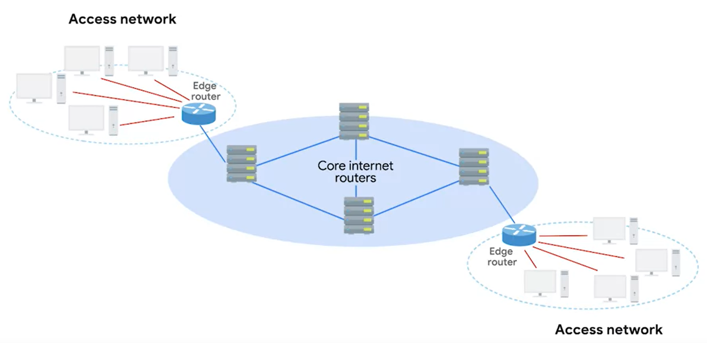

Routers use exterior gateway protocols when they need to share information across different organizations.

core routers goal is to get data to the edge router of an autonomous system
IANA - non profit org that does things like allocating IPs
its also responsible for allocating ASN - Autonoous System Number
ASN - 32 bit numbers, it recognize a whole org
eg AS19604 = IBM
only one protocol is in control of the exterior routing - BGP, or Border Gateway Protocol